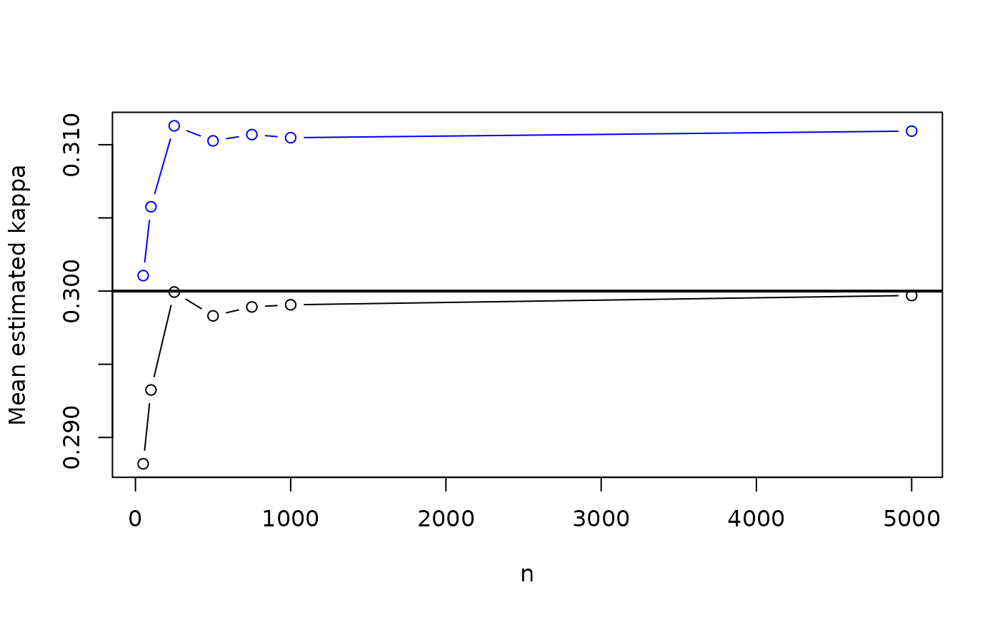

Consistency with missing ratings
2023-05-02
consistency.rmdThe functions in quadagree are consistent in the
presence of missing ratings, assuming every rater is the same, and the
missingness does not depend on the data.
The following samples ratings from a Perreault-Leigh model where each
rater has his own independent probability having his data missing. The
inferential methods in quadagree are valid in more general
settings that this, i.e., missingness might be depenent, or generated
according to a suitable process (we only require that the process is
mean-ergodic). The function simulate_jsm can be found at
the bottom of this document.
#' Sample n rating vectors with missing data
#' @param n Number of vectors sampled.
#' @param p Probability vector with p[i] the probability that the ith raters
#' data is not missing
sim <- \(n, p) {
t_dist <- rep(1 / 5, 5)
skills <- c(0.9, 0.1, 0.2, 0.5, 0.8, 0.9)
x <- simulate_jsm(n, skills, model = "fleiss", true_dist = t_dist)
for (i in seq(length(p))) x[sample(n, n - p[i] * n), i] <- NA
x
}Here is an example:
## [,1] [,2] [,3] [,4] [,5] [,6]
## [1,] 4 4 2 2 NA 4
## [2,] 2 NA NA NA 5 2
## [3,] 5 5 2 NA 1 5
## [4,] 3 5 5 3 NA 3
## [5,] NA 5 3 5 4 4
## [6,] 5 3 1 4 NA 5
## [7,] 2 4 4 2 2 2
## [8,] 4 3 2 NA NA 4
## [9,] 1 NA NA 1 1 1
## [10,] 5 1 NA NA NA NA
## attr(,"n")
## [1] 10
## attr(,"s")
## [1] 0.9 0.1 0.2 0.5 0.8 0.9
## attr(,"true_dist")
## [1] 0.2 0.2 0.2 0.2 0.2
## attr(,"guessing_dist")
## [1] 0.2 0.2 0.2 0.2 0.2
## attr(,"kappa")
## [1] 0.3Observe the kappa attributes, which contains the true
kappa (both Fleiss and Cohen). Now let’s estimate Fleiss using
quadagree and irrCAC. The plot below shows the
population value (solid line), the quadagree estimates
(black), and the irrCAC estimates (blue).
set.seed(313)
kappa <- attr(x, "kappa")
n_reps <- 1000
nn <- c(50, 100, 250, 500, 750, 1000, 5000)
results <- sapply(nn, \(n) {
results <- replicate(n_reps, {
x <- sim(n, p)
c(
quadagree:::fleiss(x),
c(irrCAC::fleiss.kappa.raw(x, weights = "quadratic")$est[4])$coeff.val
)
})
rowMeans(results, na.rm = TRUE)
})
plot(nn, results[1, ], ylim = c(min(results, na.rm = TRUE), max(results, na.rm = TRUE)), type = "b",
ylab = "Mean estimated kappa", xlab = "n")
points(nn, results[2, ], col = "blue", type = "b")
abline(h = kappa, lwd = 2)
As can be seen, irrCAC has an asymptotic bias of
approximately \(0.11\), and is not
consistent. quadagree approximates the true value better
and better as \(n\) grows larger.
Code for simulate_jsm
simulate_jsm <- function(n,
s,
model = c(
"general",
"cohen-fleiss",
"fleiss",
"bp",
"tu"
),
true_dist,
guessing_dist) {
model <- match.arg(model)
if (model == "cohen-fleiss") {
if (is.null(nrow(guessing_dist))) {
true_dist <- guessing_dist
} else {
true_dist <- colSums(guessing_dist * (1 - s) / sum(1 - s))
}
} else if (model == "tu") {
true_dist <- rep(1, ncol(guessing_dist)) / ncol(guessing_dist)
} else if (model == "bp") {
guessing_dist <- rep(1, length(true_dist)) / length(true_dist)
} else if (model == "fleiss") {
guessing_dist <- true_dist / sum(abs(true_dist))
}
if (any(true_dist < 0)) {
stop("true_dist must contain only positive elements.")
}
# The true category for each item.
q <- length(true_dist)
x_star <- sample(q, n, replace = TRUE, prob = true_dist)
if (is.null(nrow(guessing_dist))) {
observations <- sapply(seq_along(s), function(j) {
z <- stats::rbinom(n, 1, s[j])
z * x_star + (1 - z) * sample(q, n, replace = TRUE, guessing_dist)
})
} else {
observations <- sapply(seq_along(s), function(j) {
z <- stats::rbinom(n, 1, s[j])
z * x_star + (1 - z) * sample(q, n, replace = TRUE, guessing_dist[j, ])
})
}
attr(observations, "n") <- n
attr(observations, "s") <- s
attr(observations, "true_dist") <- true_dist
attr(observations, "guessing_dist") <- guessing_dist
attr(observations, "kappa") <- true_jsm(s)
observations
}
true_jsm <- \(s) {
ss <- s %*% t(s)
diag(ss) <- 0
j <- ncol(ss)
sum(ss) / (j * (j - 1))
}